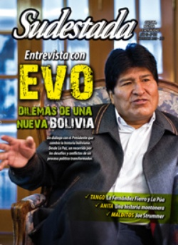

Buscar
Edición N° 124
Noviembre 2013
Revista bimensual
Comprar edición impresaSumario
- Evo Morales: "¿Qué nos pueden cuestionar? Nada"
- Jopara: El borde del monte
- De críticas y definiciones
- Casillas
- Un largo camino hacia otra Bolivia
- Dúo Barro: "Es clave crear música en forma cooperativa y artesanal"
- Anita, la montonera
- Joe Strummer. El caudillo del punk rock
- Tango sin calco ni copia
- Néstor Mux. Ese pájaro desdichado y luminoso
- Miguel Mazzeo: "Una revolución es el acto creativo colectivo por excelencia"
- La ley del gatillo